AutoTech in Transition: Inside the Future of Automotive AI
Sharing perspectives on production AI systems, computer vision infrastructure, and the future of intelligent automotive technologies at AutoTech Aftermarket Summit 2026
 Speaking at AutoTech Aftermarket Summit 2026 at BITEC Bangkok.
Speaking at AutoTech Aftermarket Summit 2026 at BITEC Bangkok.
🚗 AutoTech in Transition: Inside the Future of Automotive AI
“AI becomes truly valuable when research, engineering, and deployment converge into systems that solve real operational problems.”
🌏 AutoTech Aftermarket Summit 2026
Today, I had the opportunity to join AutoTech Aftermarket Summit 2026 at BITEC Bangkok as an invited speaker representing MARSAIL (Motor AI Recognition Solution AI Laboratory).
The summit was organized as part of:
- TyreXpo Asia Bangkok 2026
- AutoMROtive 2026
The conference brought together professionals across the automotive ecosystem, including:
- OEMs
- automotive service providers
- AI startups
- workshop technology platforms
- enterprise solution providers
- infrastructure companies
- fleet operators
- researchers and engineers
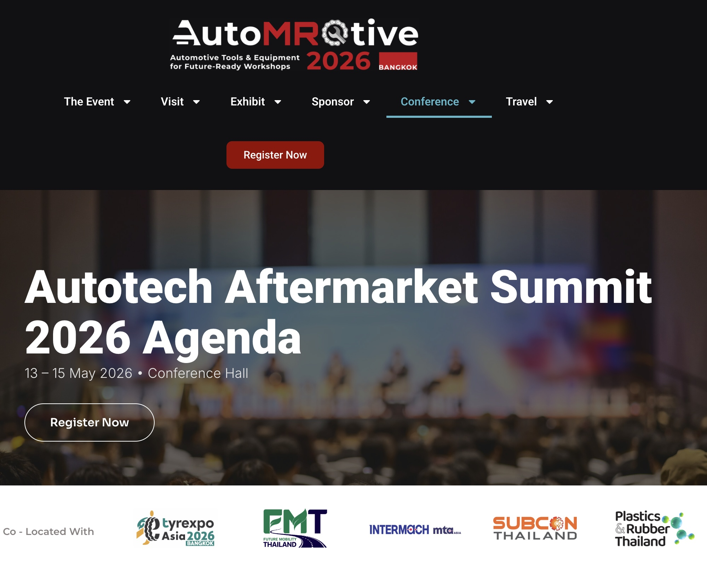
Figure 1: The official homepage of AutoTech Aftermarket Summit 2026. Seeing the event officially published online made everything suddenly feel real. AutoTech Aftermarket Summit 2026 was organized as part of TyreXpo Asia Bangkok and AutoMROtive 2026, bringing together global leaders across automotive technology, AI infrastructure, mobility innovation, and intelligent service platforms. This event became a meeting point between traditional automotive industries and the next generation of AI-driven operational systems. Official Website: https://www.automrotive.com/
This year’s summit focused heavily on the technological transformation occurring inside the automotive aftermarket industry — particularly the integration of AI systems into operational workflows, intelligent diagnostics, customer service automation, predictive maintenance, and next-generation mobility infrastructure.

Figure 2: The official conference agenda featuring my session, “AutoTech in Transition: Current Trends and Future Trajectories,” scheduled on 15 May 2026 at 11:30 AM. This session focused on how AI, intelligent automation, and modern digital infrastructure are reshaping the automotive aftermarket ecosystem. It was an honor to contribute perspectives from MARSAIL and discuss how production-grade AI systems are moving from research environments into real operational automotive workflows. Official Agenda: https://www.automrotive.com/conference-agenda-2026/
At 11:30 AM, I joined the session:
AutoTech in Transition: Current Trends and Future Trajectories
The discussion explored several important themes:
- How AI is reshaping the automotive ecosystem
- Emerging technologies driving operational transformation
- Challenges in fragmented industrial environments
- Startup perspectives on scalable innovation
- Future directions for intelligent automotive systems
I joined the session as:
Dr. Teerapong Panboonyuen
Senior Research Scientist, Head of AI, MARSAIL

Figure 3: My official speaker profile displayed on the AutoTech Aftermarket Summit 2026 speaker list. Seeing my name appear alongside professionals, founders, innovators, and technology leaders from across the automotive industry was both exciting and deeply meaningful. Moments like this quietly remind me how far the journey in AI research, engineering, and deployment has progressed over the years. Official Speakers List: https://www.automrotive.com/conference-speakers/
🤖 The Transition Toward Intelligent Automotive Infrastructure
One of the most important observations from the summit was clear:
The automotive industry is rapidly transitioning from traditional operational models into intelligent AI-driven infrastructure.
Historically, automotive workflows depended heavily on:
- manual inspection,
- human-operated diagnostics,
- fragmented service records,
- disconnected maintenance systems,
- and reactive operational processes.
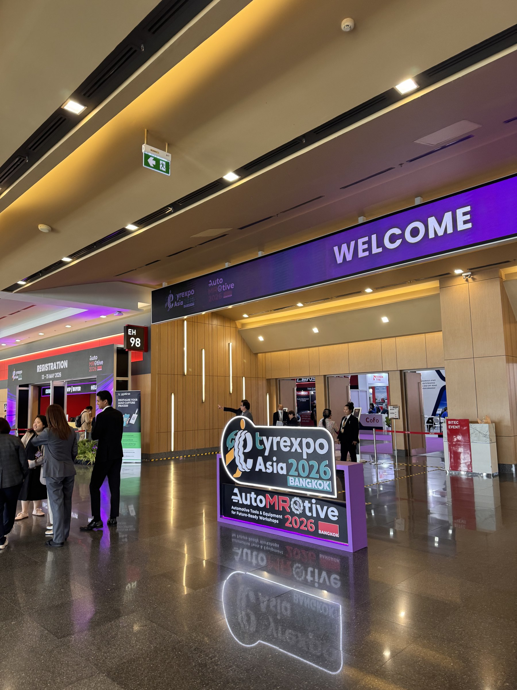
Figure 4: The atmosphere near the entrance area of BITEC Bangkok before entering the conference hall. There was an incredible sense of energy throughout the venue — engineers, startup founders, researchers, enterprise teams, and technology providers gathering together in one place to discuss the future of automotive innovation. At that moment, the excitement started becoming real. It felt inspiring to become part of a global technology event centered around AI, intelligent systems, and the future direction of mobility infrastructure.
Today, those systems are evolving toward:
- computer vision-assisted inspection,
- AI-driven diagnostics,
- predictive maintenance pipelines,
- intelligent customer interaction systems,
- automated workflow orchestration,
- and real-time operational analytics.
The shift is no longer theoretical.
AI systems are now moving directly into production environments.
And this transformation is accelerating faster than many expected.
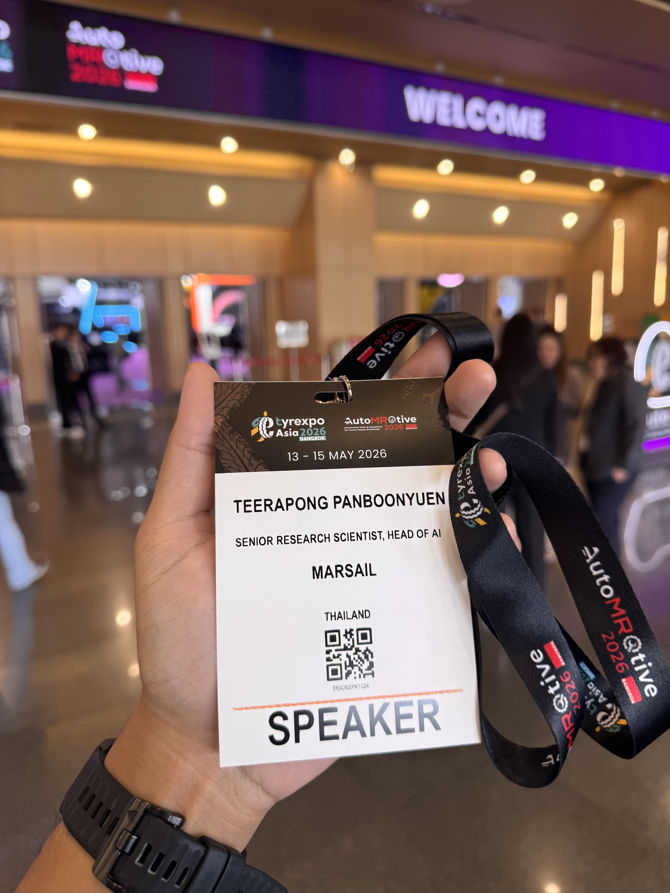
Figure 5: A photo of my official speaker badge together with the conference backdrop at AutoTech Aftermarket Summit 2026. Behind this badge were years of research, experimentation, deployment challenges, production incidents, debugging sessions, infrastructure engineering, and continuous iteration in applied AI systems. Holding this badge felt more than symbolic — it represented the collective effort behind the AI systems we have spent years building at MARSAIL.
🧠 Building AI Systems for Real-World Automotive Operations
At MARSAIL, our focus has never been limited to building AI demonstrations or experimental prototypes.
Our objective has always been much more practical:
Building production-grade AI systems capable of operating reliably in real automotive environments.
This introduces engineering challenges far beyond model accuracy alone.
Real-world automotive AI systems must address:
- deployment scalability,
- latency constraints,
- hardware limitations,
- environmental variability,
- long-tail failure cases,
- model robustness,
- infrastructure reliability,
- and continuous operational monitoring.

Figure 6: The atmosphere on stage shortly before the session officially began. The conference hall was gradually filling with attendees from across the automotive and technology industries, while discussions around AI, intelligent systems, and digital transformation continued throughout the venue. Standing there before the talk started, I felt both excited and grateful for the opportunity to share the journey behind MARSAIL and our work in automotive AI.
In research environments, benchmark performance often becomes the primary metric.
But in production systems, the questions become fundamentally different:
- Can the model maintain stable inference performance at scale?
- Can it generalize under difficult environmental conditions?
- Can it reduce operational workload?
- Can it integrate into existing enterprise infrastructure?
- Can it support real business operations reliably over time?
These questions define the difference between experimental AI and deployable AI.

Figure 7: Speaking during the session “AutoTech in Transition: Current Trends and Future Trajectories.” This became one of the most enjoyable and meaningful technical talks I have given in recent years. The session allowed me to share perspectives on production AI systems, computer vision infrastructure, intelligent automotive workflows, and the engineering realities behind deploying AI into operational environments. More importantly, it was an opportunity to represent the incredible work and research culture built together at MARSAIL.
🔬 Automotive AI Is an Engineering Problem
During the session, I emphasized that automotive AI should not be viewed purely as a machine learning problem.
It is fundamentally a systems engineering challenge.
Modern automotive AI requires the integration of multiple layers simultaneously:

Figure 8: Another moment captured during the fireside discussion on automotive AI transformation. We explored how emerging AI technologies are influencing the future of vehicle inspection systems, predictive maintenance, intelligent service platforms, and customer experience automation. The conversation felt highly engaging because many attendees shared similar interests in bridging advanced AI research with deployable industrial systems.
Computer Vision
Detection, segmentation, OCR, damage analysis, asset recognition, and visual understanding systems operating under real-world constraints.
Machine Learning Infrastructure
Training pipelines, distributed experimentation, model versioning, reproducibility, GPU optimization, monitoring systems, and scalable inference services.
Cloud and Edge Computing
Deployment architectures capable of supporting both centralized cloud systems and low-latency edge inference.
Data Engineering
Automotive AI systems are only as strong as the datasets supporting them. Large-scale annotation, dataset balancing, domain adaptation, and continual data refinement remain critical.
Human-Centered Design
AI systems must integrate naturally into operational workflows rather than increasing friction for users.
The future of automotive AI will belong to teams capable of combining all these disciplines together.
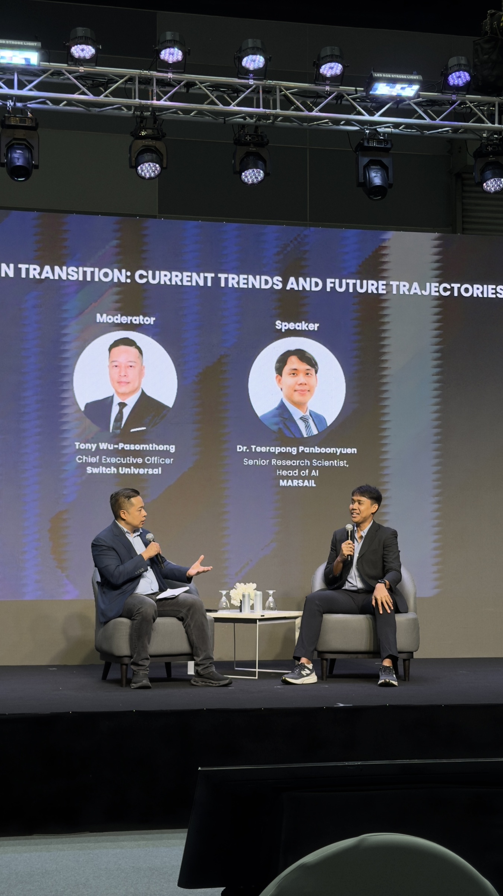
Figure 9: Sharing technical perspectives from MARSAIL during the conference session. One important theme I wanted to emphasize was that successful automotive AI requires far more than high benchmark accuracy. Real-world systems must operate reliably under difficult operational conditions, integrate into enterprise workflows, and scale efficiently across production infrastructure. These engineering realities define the future of applied AI in the automotive ecosystem.
🚘 Computer Vision Is Becoming Core Automotive Infrastructure
One major trend discussed during the summit was the increasing role of computer vision inside automotive ecosystems.
Computer vision is no longer limited to research publications or isolated proof-of-concept systems.
It is becoming operational infrastructure.
Applications now include:
- automated vehicle inspection,
- intelligent damage assessment,
- maintenance workflow automation,
- license plate recognition,
- workshop monitoring systems,
- predictive maintenance support,
- service quality assurance,
- and fleet intelligence platforms.
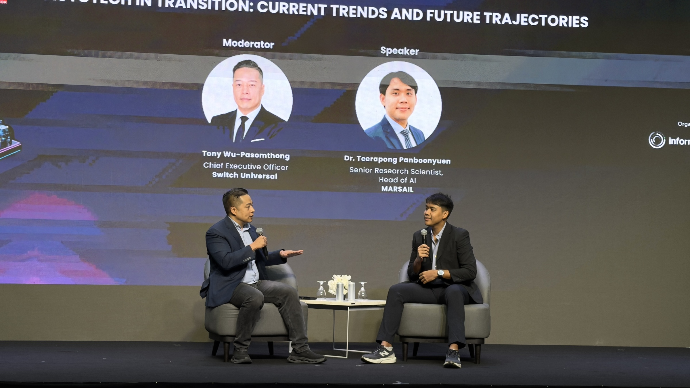
Figure 10: Discussing current trends shaping the future of automotive AI and intelligent mobility systems. Topics included computer vision, intelligent diagnostics, scalable inference infrastructure, operational automation, and the growing role of AI startups within the automotive technology landscape. The automotive industry is now entering an era where AI is becoming foundational infrastructure rather than optional enhancement.
As deep learning architectures continue evolving — especially Vision Transformers, hybrid CNN-transformer systems, and multimodal foundation models — the capability of automotive AI systems is expanding significantly.
However, model architecture alone is not enough.
The true challenge lies in transforming research capability into deployable operational systems.
That gap remains one of the most difficult engineering challenges in applied AI today.
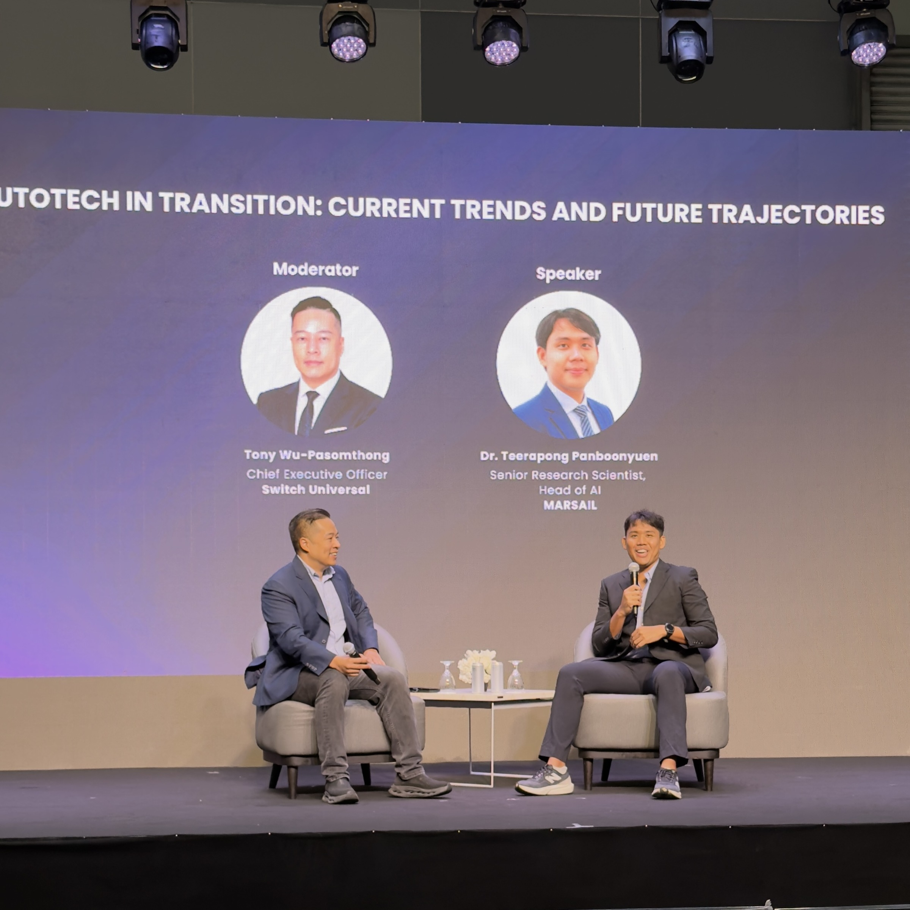
Figure 11: Explaining the transition from AI research into real-world deployment environments. One of the most rewarding aspects of this session was discussing engineering challenges that many AI teams encounter in practice — including scalability, latency optimization, robustness, monitoring, infrastructure reliability, and long-term maintainability of production AI systems.
⚙️ Startups and the Speed of Innovation
Another important topic discussed during the summit was the growing influence of startups in the automotive technology ecosystem.
Large organizations often possess extensive infrastructure and operational scale.
But startups possess something equally powerful:
Speed.
Agility.
Experimental freedom.
And the ability to iterate rapidly.
This creates an environment where smaller AI teams can drive disproportionate innovation.
Today, many critical breakthroughs in applied automotive AI are emerging not only from enterprise organizations, but also from highly specialized engineering teams capable of moving quickly from research into deployment.
This transition is reshaping the structure of the automotive technology landscape itself.
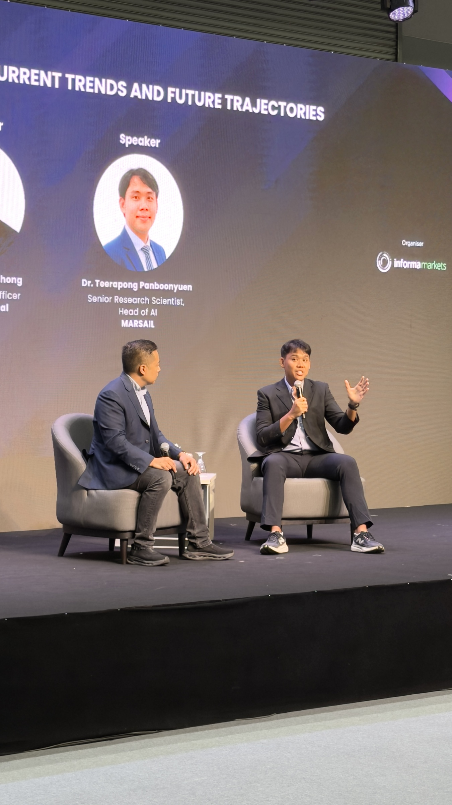
Figure 12: A technical discussion during the AutoTech in Transition session at BITEC Bangkok. What made this session especially enjoyable was the opportunity to discuss AI not only from a research perspective, but also from the viewpoint of deployment, infrastructure engineering, operational integration, and industrial scalability. Applied AI becomes truly meaningful when it creates measurable value in real operational environments.
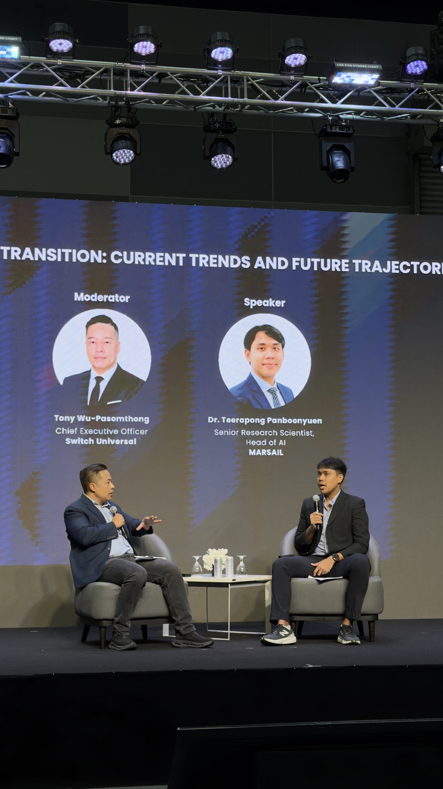
Figure 13: Presenting future directions of automotive AI systems and intelligent infrastructure. The automotive ecosystem is evolving rapidly toward AI-assisted operations, connected service platforms, multimodal intelligence, and predictive workflow orchestration. This transformation represents one of the most exciting engineering shifts currently happening across applied AI industries.
🧪 Research Alone Is No Longer Enough
One important realization from recent years is this:
Publishing research alone is no longer sufficient.
Modern AI teams must increasingly operate across multiple dimensions simultaneously:
- research,
- engineering,
- deployment,
- infrastructure,
- operations,
- and product integration.
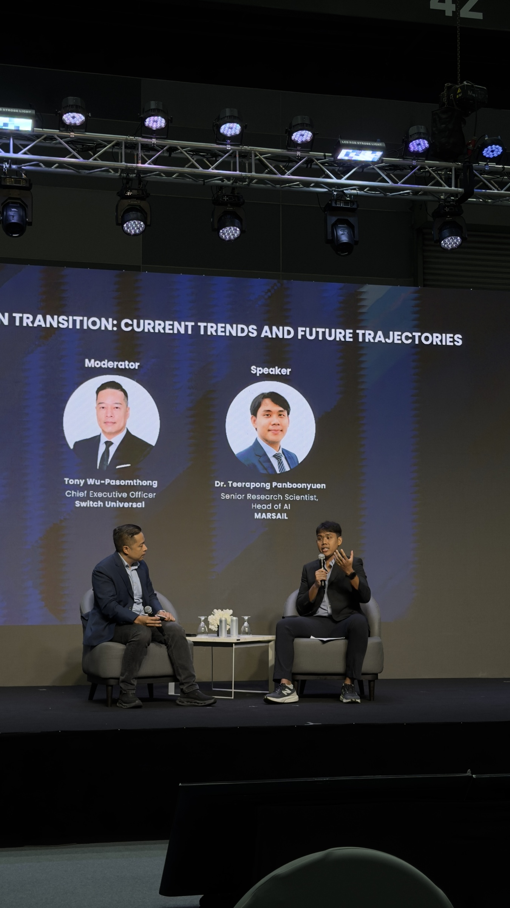
Figure 14: Another moment from the technical fireside conversation during AutoTech Aftermarket Summit 2026. I particularly enjoyed discussing how smaller AI teams and startups can drive rapid innovation through agility, experimentation speed, and close integration between research and engineering. The future automotive ecosystem will likely be shaped by organizations capable of iterating quickly while maintaining strong technical depth.
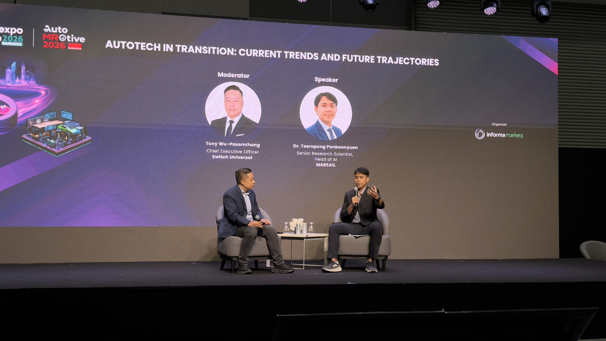
Figure 15: Explaining practical engineering considerations behind large-scale automotive AI systems. Topics such as dataset quality, inference optimization, edge deployment, model robustness, and infrastructure scalability are becoming increasingly important as AI systems transition into mission-critical operational environments.
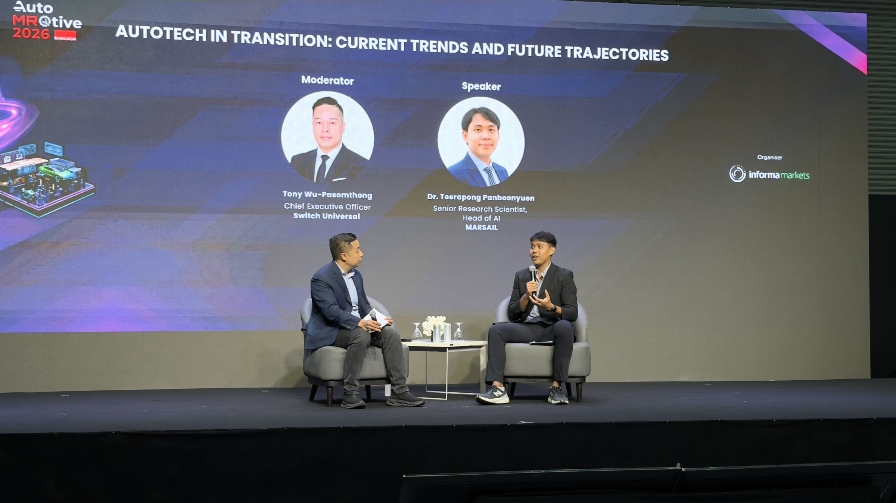
Figure 16: A moment during the discussion on AI infrastructure and intelligent automotive services. The conversation highlighted how future automotive ecosystems will increasingly depend on integrated AI platforms capable of combining perception, reasoning, analytics, and operational automation into unified intelligent systems.
The industry now values systems that can survive real-world complexity.
This requires balancing:
- state-of-the-art performance,
- computational efficiency,
- scalability,
- maintainability,
- and operational reliability.
At MARSAIL, this mindset strongly influences how we approach AI development.
The objective is not simply creating accurate models.
The objective is building AI systems that create measurable operational value.
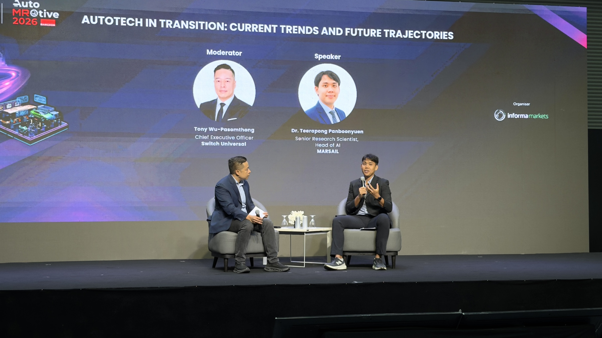
Figure 17: Sharing perspectives on building production-grade AI systems for automotive applications. While state-of-the-art models remain important, long-term success ultimately depends on deployment stability, maintainability, scalability, and the ability to continuously improve systems under real-world operational constraints.
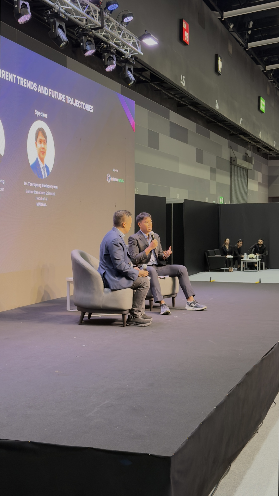
Figure 18: Discussing how AI transformation is reshaping automotive operations and customer experiences. Across the industry, there is increasing momentum toward intelligent inspection systems, predictive analytics, workflow automation, and AI-assisted decision-making platforms. This transition is fundamentally changing how automotive services are designed and delivered.
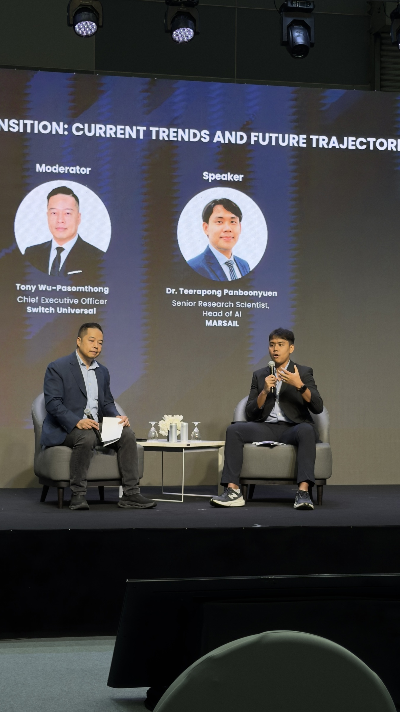
Figure 19: Sharing experiences from MARSAIL while discussing applied AI engineering in the automotive domain. Many of the ideas presented during this session were shaped through years of experimentation, deployment iterations, infrastructure refinement, and collaboration across research and engineering teams. It felt incredibly meaningful to share those experiences with professionals from across the automotive ecosystem.

Figure 20: Presenting perspectives on the next generation of automotive AI systems at BITEC Bangkok. The automotive industry is moving toward a future where AI infrastructure becomes deeply integrated into maintenance workflows, service intelligence, operational analytics, and connected mobility ecosystems. Conferences like this provide an important opportunity to exchange ideas between researchers, engineers, and industry leaders.
❤️ Representing the MARSAIL Team
Personally, one of the most meaningful aspects of today was having the opportunity to represent the incredible people behind MARSAIL.
AI systems are never built by one person.
Behind every successful deployment are teams contributing through:
- research,
- annotation,
- infrastructure engineering,
- backend systems,
- deployment pipelines,
- experimentation,
- debugging,
- validation,
- and continuous iteration.
Many of the AI systems we discussed today represent years of collective work.
Seeing those efforts shared on an international stage was genuinely meaningful.
Not simply because of the presentation itself.
But because it reflected how far the team has progressed together.

Figure 21: Another memorable moment during the AutoTech in Transition session. Throughout the discussion, I tried to emphasize that impactful AI systems require much more than strong architectures alone. Successful deployment depends equally on data engineering, infrastructure design, operational integration, and continuous system refinement under real-world conditions.

Figure 22: Discussing the long-term future of intelligent automotive systems and AI-driven operational ecosystems. Over the next decade, technologies such as multimodal AI, real-time inference systems, intelligent automation, and connected mobility infrastructure will likely redefine the entire automotive service landscape.
🌏 The Future of Automotive AI
The automotive industry is entering a period where AI will increasingly become foundational infrastructure rather than optional enhancement.
Over the next decade, we will likely see rapid growth in:
- intelligent inspection systems,
- multimodal automotive foundation models,
- autonomous workflow orchestration,
- predictive service infrastructure,
- edge AI systems,
- real-time operational intelligence,
- and large-scale connected automotive ecosystems.
The companies capable of integrating AI deeply into operational workflows will define the next generation of automotive technology.
This makes the current moment incredibly exciting for engineers, researchers, and startups working in applied AI.
Because we are no longer discussing theoretical futures.
We are actively building them.
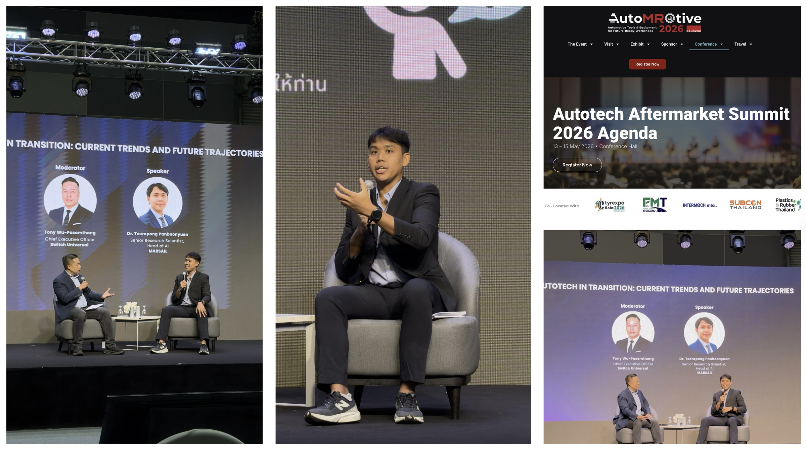
Figure 23: Final moments during the AutoTech in Transition session at AutoTech Aftermarket Summit 2026. Looking back, this became one of the most enjoyable technical talks I have participated in. Beyond the presentation itself, the experience represented years of learning, engineering, experimentation, and persistence in applied AI research and deployment. I am deeply grateful to the MARSAIL team and everyone who contributed to the journey behind these systems.
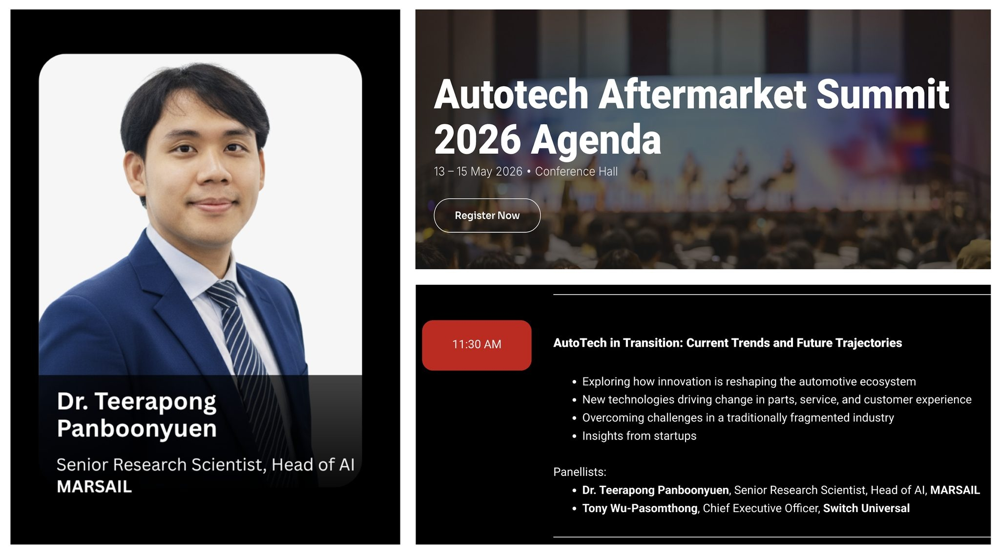
Figure 24: A final merged composition combining my official speaker headshot, the conference homepage, and the official session agenda for “AutoTech in Transition: Current Trends and Future Trajectories.” This image summarizes one of the most meaningful moments in my journey as an AI researcher and Head of AI at MARSAIL. From research and experimentation to production deployment and international conference discussions, this experience became a powerful reminder of how applied AI can evolve from ideas into real operational impact within the automotive industry.
🙏 Final Thoughts
Speaking at AutoTech Aftermarket Summit 2026 was an experience I will remember for a very long time.
Not only as a speaker.
But as an AI engineer and researcher who has spent years working on production AI systems for real-world automotive applications.
I would like to sincerely thank:
- the organizers of AutoTech Aftermarket Summit 2026,
- everyone who attended the session,
- and especially the entire MARSAIL team.
Thank you for the opportunity to share our work, ideas, and vision for the future of automotive AI.
The future of automotive technology will not be defined solely by smarter models.
It will be defined by teams capable of transforming AI research into reliable systems that operate meaningfully at scale.
And that transition has already begun.
Citation
Panboonyuen, Teerapong. (May 2026). AutoTech in Transition: Inside the Future of Automotive AI. Blog post on Kao Panboonyuen.
https://kaopanboonyuen.github.io/blog/2026-05-15-autotech-in-transition-inside-the-future-of-automotive-ai
For a BibTeX citation:
@article{panboonyuen2026autotechai,
title = "AutoTech in Transition: Inside the Future of Automotive AI",
author = "Panboonyuen, Teerapong",
journal = "kaopanboonyuen.github.io/",
year = "2026",
month = "May",
url = "https://kaopanboonyuen.github.io/blog/2026-05-15-autotech-in-transition-inside-the-future-of-automotive-ai"
}
Thank you for reading this technical reflection on automotive AI, intelligent systems, and the future of AI-driven mobility infrastructure. 🚗🤖⚙️
If this article inspired you, feel free to share it with researchers, engineers, startups, and AI enthusiasts building the next generation of automotive technologies.
Teerapong Panboonyuen
My research focuses on leveraging advanced machine intelligence techniques, specifically computer vision, to enhance semantic understanding, learning representations, visual recognition, and geospatial data interpretation.